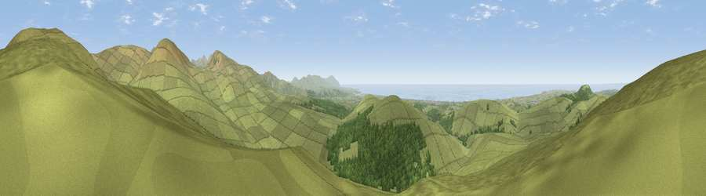

Viewpoint near Haile
#856 in England · top 10% of its area beats it · near HaileThe view, rendered

A 360° render of this exact spot computed from the terrain model, tree cover and land cover — summer colours, afternoon light, calibrated against photographs of famous viewpoints. Real trees, hedges and buildings will differ in detail.
The panorama
Grey silhouette: terrain skyline in each direction (720 bearings, Earth curvature and refraction included). Dashed green: skyline with trees (+15 m) and buildings (+8 m) as obstacles. Blue strip: how far the ground is visible on each bearing.
Where the view opens
Wedge length = distance to the farthest visible ground on that bearing (vegetation-aware). Rings at 10, 25 and 50 km.
What fills the view
75% grassland · 17% woodland · 7% water ·
Angular shares of the visible panorama (visual magnitude), not map area. Landscape diversity 0.33 (0–1 Shannon).
Key numbers
More beautiful places nearby
The staircase of upgrades: each row has a higher view potential than everything closer. Driving times are estimates from straight-line distance, calibrated against real road routing — check an actual route before setting out.
| Place | Direction | Drive | Score |
|---|---|---|---|
| Viewpoint c10215_6233 | E · 3 km | ~7 min | 81.5 |
| Ponsonby Fell | S · 3 km | ~8 min | 81.9 |
| Viewpoint c10214_6246 | E · 3 km | ~8 min | 82.1 |
| Viewpoint near Ennerdale Bridge | NE · 4 km | ~9 min | 85.0 |
| Crag Fell | NNE · 4 km | ~10 min | 89.1 |
| Ullock Pike | NE · 24 km | ~39 min | 89.4 |
| Long Side | NE · 24 km | ~39 min | 89.5 |
| Viewpoint near Finsthwaite | SE · 37 km | ~56 min | 90.3 |
54.48026, -3.41043 · source: screening · position refined by local search. Computed location — check access rights before visiting.